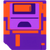

Testador de Arquivo
Teste seu Arquivo
Suba seu arquivo aqui pra ver se tá pronto pro NFT!
 Escolher Arquivo
↩ Voltar
♿
Alto Contraste (Ativar/Desativar)
Fonte Legível (Ativar/Desativar)
Aumentar Letra
Diminuir Letra
Tirar Distrações (Ativar/Desativar)
Leitura em Voz Alta (Ativar/Desativar)